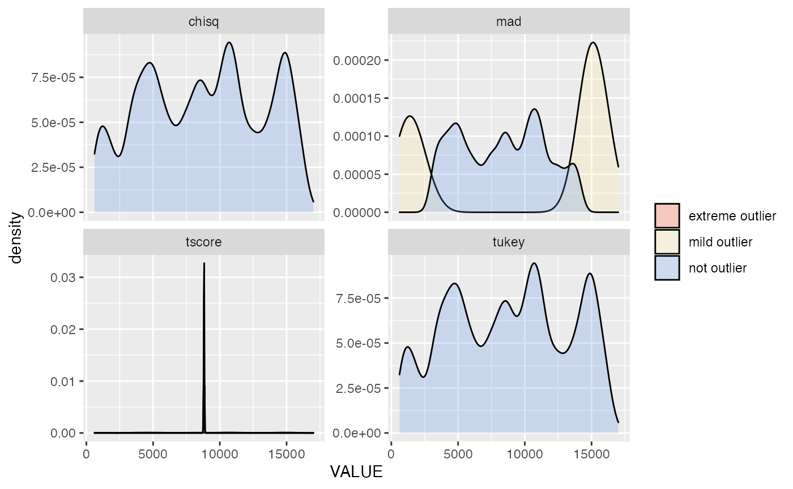
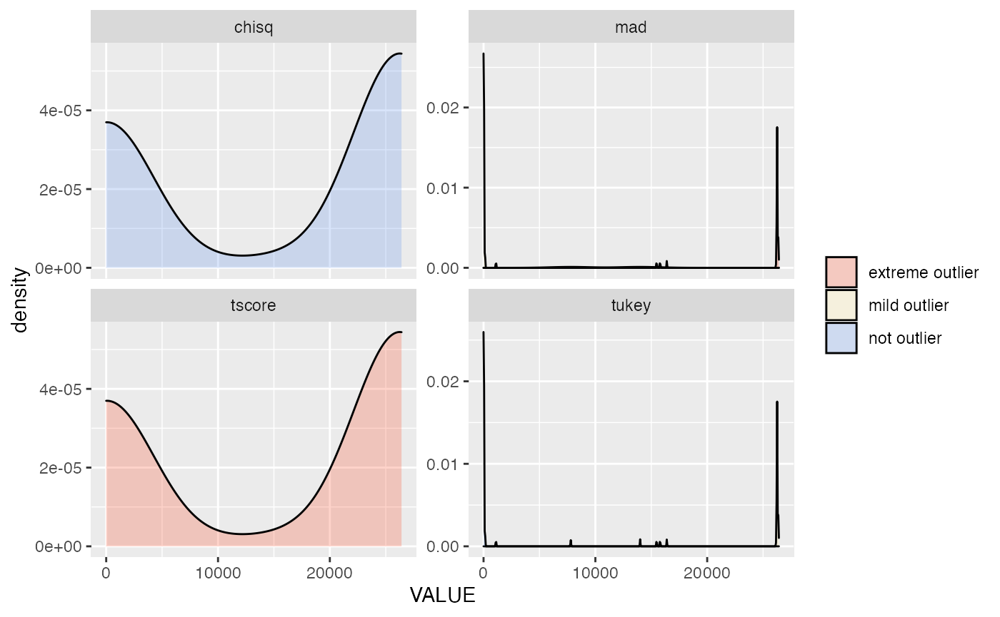

outlier-analysis.rmdThis document compares outlier detection methods against a sample dataset.
library(dplyr) #> #> Attaching package: 'dplyr' #> The following objects are masked from 'package:stats': #> #> filter, lag #> The following objects are masked from 'package:base': #> #> intersect, setdiff, setequal, union library(purrr) library(tidyr) library(ggplot2) library(ODWGtools)
# get data data("bdl") # add some groupings bdl = bdl %>% mutate( MONTH = format(DATETIME, "%b"), YEAR = format(DATETIME, "%Y"), DAYMON = format(DATETIME, "%b-%d") )
bdl.none = bdl %>% mutate( tukey = tukey_outliers(VALUE, QAQC_FLAG == "G"), zscore = zscore_outliers(VALUE, QAQC_FLAG == "G"), tscore = tscore_outliers(VALUE, QAQC_FLAG == "G"), chisq = chisq_outliers(VALUE, QAQC_FLAG == "G"), mad = mad_outliers(VALUE, QAQC_FLAG == "G"), # isofor = isofor_outliers(VALUE, QAQC_FLAG == "G"), # lof = lof_outliers(VALUE, QAQC_FLAG == "G") ) %>% ungroup() %>% select(-MONTH, - YEAR, - DAYMON) %>% mutate( extreme.outlier.score = pmap( list(zscore, tscore, chisq, mad), function(...) sum(list(...) %in% "extreme outlier") ), mild.outlier.score = pmap( list(zscore, tscore, chisq, mad), function(...) sum(list(...) %in% c("mild outlier", "extreme outlier")) ), not.outlier.score = pmap( list(zscore, tscore, chisq, mad), function(...) sum(list(...) %in% c("not outlier")) ) )
# group by year bdl.year = bdl %>% group_by(YEAR) %>% mutate( tukey = tukey_outliers(VALUE, QAQC_FLAG == "G"), zscore = zscore_outliers(VALUE, QAQC_FLAG == "G"), tscore = tscore_outliers(VALUE, QAQC_FLAG == "G"), chisq = chisq_outliers(VALUE, QAQC_FLAG == "G"), mad = mad_outliers(VALUE, QAQC_FLAG == "G"), # isofor = isofor_outliers(VALUE, QAQC_FLAG == "G"), # lof = lof_outliers(VALUE, QAQC_FLAG == "G") ) %>% ungroup() %>% select(-MONTH, - DAYMON) %>% mutate( extreme.outlier.score = pmap( list(zscore, tscore, chisq, mad), function(...) sum(list(...) %in% "extreme outlier") ), mild.outlier.score = pmap( list(zscore, tscore, chisq, mad), function(...) sum(list(...) %in% c("mild outlier", "extreme outlier")) ), not.outlier.score = pmap( list(zscore, tscore, chisq, mad), function(...) sum(list(...) %in% c("not outlier")) ) )
# group by month bdl.mon = bdl %>% group_by(MONTH) %>% mutate( tukey = tukey_outliers(VALUE, QAQC_FLAG =="G"), zscore = zscore_outliers(VALUE, QAQC_FLAG == "G"), tscore = tscore_outliers(VALUE, QAQC_FLAG == "G"), chisq = chisq_outliers(VALUE, QAQC_FLAG == "G"), mad = mad_outliers(VALUE, QAQC_FLAG == "G"), # isofor = isofor_outliers(VALUE, QAQC_FLAG == "G"), # lof = lof_outliers(VALUE, QAQC_FLAG == "G") ) %>% ungroup() %>% select(- YEAR, - DAYMON) %>% mutate( extreme.outlier.score = pmap( list(zscore, tscore, chisq, mad), function(...) sum(list(...) %in% "extreme outlier") ), mild.outlier.score = pmap( list(zscore, tscore, chisq, mad), function(...) sum(list(...) %in% c("mild outlier", "extreme outlier")) ), not.outlier.score = pmap( list(zscore, tscore, chisq, mad), function(...) sum(list(...) %in% c("not outlier")) ) )
bdl.daymon = bdl %>% group_by(DAYMON) %>% mutate( tukey = tukey_outliers(VALUE, QAQC_FLAG == "G"), zscore = zscore_outliers(VALUE, QAQC_FLAG == "G"), tscore = tscore_outliers(VALUE, QAQC_FLAG == "G"), chisq = chisq_outliers(VALUE, QAQC_FLAG == "G"), mad = mad_outliers(VALUE, QAQC_FLAG == "G"), # isofor = isofor_outliers(VALUE, QAQC_FLAG == "G"), # lof = lof_outliers(VALUE, QAQC_FLAG == "G") ) %>% ungroup() %>% select(-MONTH, - YEAR) %>% mutate( extreme.outlier.score = pmap( list(zscore, tscore, chisq, mad), function(...) sum(list(...) %in% "extreme outlier") ), mild.outlier.score = pmap( list(zscore, tscore, chisq, mad), function(...) sum(list(...) %in% c("mild outlier", "extreme outlier")) ), not.outlier.score = pmap( list(zscore, tscore, chisq, mad), function(...) sum(list(...) %in% c("not outlier")) ) ) #> Warning: Problem with `mutate()` input `tscore`. #> ℹ NaNs produced #> ℹ Input `tscore` is `tscore_outliers(VALUE, QAQC_FLAG == "G")`. #> ℹ The error occurred in group 125: DAYMON = "Jan-05". #> Warning in sqrt(n - 1 - temp^2): NaNs produced #> Warning: Problem with `mutate()` input `tscore`. #> ℹ NaNs produced #> ℹ Input `tscore` is `tscore_outliers(VALUE, QAQC_FLAG == "G")`. #> ℹ The error occurred in group 216: DAYMON = "Mar-04". #> Warning in sqrt(n - 1 - temp^2): NaNs produced #> Warning: Problem with `mutate()` input `tscore`. #> ℹ NaNs produced #> ℹ Input `tscore` is `tscore_outliers(VALUE, QAQC_FLAG == "G")`. #> ℹ The error occurred in group 217: DAYMON = "Mar-05". #> Warning in sqrt(n - 1 - temp^2): NaNs produced #> Warning: Problem with `mutate()` input `tscore`. #> ℹ NaNs produced #> ℹ Input `tscore` is `tscore_outliers(VALUE, QAQC_FLAG == "G")`. #> ℹ The error occurred in group 287: DAYMON = "Nov-13". #> Warning in sqrt(n - 1 - temp^2): NaNs produced #> Warning: Problem with `mutate()` input `tscore`. #> ℹ NaNs produced #> ℹ Input `tscore` is `tscore_outliers(VALUE, QAQC_FLAG == "G")`. #> ℹ The error occurred in group 288: DAYMON = "Nov-14". #> Warning in sqrt(n - 1 - temp^2): NaNs produced #> Warning: Problem with `mutate()` input `tscore`. #> ℹ NaNs produced #> ℹ Input `tscore` is `tscore_outliers(VALUE, QAQC_FLAG == "G")`. #> ℹ The error occurred in group 292: DAYMON = "Nov-18". #> Warning in sqrt(n - 1 - temp^2): NaNs produced #> Warning: Problem with `mutate()` input `tscore`. #> ℹ NaNs produced #> ℹ Input `tscore` is `tscore_outliers(VALUE, QAQC_FLAG == "G")`. #> ℹ The error occurred in group 295: DAYMON = "Nov-21". #> Warning in sqrt(n - 1 - temp^2): NaNs produced #> Warning: Problem with `mutate()` input `tscore`. #> ℹ NaNs produced #> ℹ Input `tscore` is `tscore_outliers(VALUE, QAQC_FLAG == "G")`. #> ℹ The error occurred in group 319: DAYMON = "Oct-15". #> Warning in sqrt(n - 1 - temp^2): NaNs produced #> Warning: Problem with `mutate()` input `tscore`. #> ℹ NaNs produced #> ℹ Input `tscore` is `tscore_outliers(VALUE, QAQC_FLAG == "G")`. #> ℹ The error occurred in group 322: DAYMON = "Oct-18". #> Warning in sqrt(n - 1 - temp^2): NaNs produced #> Warning: Problem with `mutate()` input `tscore`. #> ℹ NaNs produced #> ℹ Input `tscore` is `tscore_outliers(VALUE, QAQC_FLAG == "G")`. #> ℹ The error occurred in group 344: DAYMON = "Sep-09". #> Warning in sqrt(n - 1 - temp^2): NaNs produced
bdl.none %>% filter(QAQC_FLAG == "G") %>% select(-extreme.outlier.score, - mild.outlier.score, - not.outlier.score) %>% gather(test, tag, - DATETIME, - VALUE, - QAQC_FLAG) %>% ggplot() + aes(x = VALUE, fill = tag) + geom_density(alpha = 0.25) + facet_wrap(~test, scales = "free_y") + scale_fill_manual(NULL, values = c( "not outlier" = "cornflowerblue", "mild outlier" = "#ffeda0", "extreme outlier" = "#fc4e2a"))

bdl.year %>% filter(QAQC_FLAG == "G") %>% select(-extreme.outlier.score, - mild.outlier.score, - not.outlier.score) %>% gather(test, tag, - DATETIME, - YEAR, - VALUE, - QAQC_FLAG) %>% ggplot() + aes(x = VALUE, fill = tag) + geom_density(alpha = 0.25) + facet_grid(YEAR ~ test, scales = "free_y") + scale_fill_manual(NULL, values = c( "not outlier" = "cornflowerblue", "mild outlier" = "#ffeda0", "extreme outlier" = "#fc4e2a"))
bdl.mon %>% filter(QAQC_FLAG == "G") %>% select(-extreme.outlier.score, - mild.outlier.score, - not.outlier.score) %>% mutate(MONTH = factor(MONTH, month.abb)) %>% gather(test, tag, - DATETIME, - MONTH, - VALUE, - QAQC_FLAG) %>% ggplot() + aes(x = VALUE, fill = tag) + geom_density(alpha = 0.25) + facet_grid(MONTH ~ test, scales = "free_y") + scale_fill_manual(NULL, values = c( "not outlier" = "cornflowerblue", "mild outlier" = "#ffeda0", "extreme outlier" = "#fc4e2a")) #> Warning: Groups with fewer than two data points have been dropped. #> Warning in max(ids, na.rm = TRUE): no non-missing arguments to max; returning - #> Inf
bdl.none %>% filter(QAQC_FLAG == "X") %>% select(-extreme.outlier.score, - mild.outlier.score, - not.outlier.score) %>% gather(test, tag, - DATETIME, - VALUE, - QAQC_FLAG) %>% ggplot() + aes(x = VALUE, fill = tag) + geom_density(alpha = 0.25) + facet_wrap(~test, scales = "free_y") + scale_fill_manual(NULL, values = c( "not outlier" = "cornflowerblue", "mild outlier" = "#ffeda0", "extreme outlier" = "#fc4e2a"))

bdl.year %>% filter(QAQC_FLAG == "X") %>% select(-extreme.outlier.score, - mild.outlier.score, - not.outlier.score) %>% gather(test, tag, - DATETIME, - YEAR, - VALUE, - QAQC_FLAG) %>% ggplot() + aes(x = VALUE, fill = tag) + geom_density(alpha = 0.25) + facet_grid(YEAR ~ test, scales = "free_y") + scale_fill_manual(NULL, values = c( "not outlier" = "cornflowerblue", "mild outlier" = "#ffeda0", "extreme outlier" = "#fc4e2a"))
bdl.mon %>% filter(QAQC_FLAG == "X") %>% select(-extreme.outlier.score, - mild.outlier.score, - not.outlier.score) %>% mutate(MONTH = factor(MONTH, month.abb)) %>% gather(test, tag, - DATETIME, - MONTH, - VALUE, - QAQC_FLAG) %>% ggplot() + aes(x = VALUE, fill = tag) + geom_density(alpha = 0.25) + facet_grid(MONTH ~ test, scales = "free_y") + scale_fill_manual(NULL, values = c( "not outlier" = "cornflowerblue", "mild outlier" = "#ffeda0", "extreme outlier" = "#fc4e2a")) #> Warning: Groups with fewer than two data points have been dropped. #> Warning: Groups with fewer than two data points have been dropped. #> Warning: Groups with fewer than two data points have been dropped. #> Warning: Groups with fewer than two data points have been dropped. #> Warning: Groups with fewer than two data points have been dropped. #> Warning: Groups with fewer than two data points have been dropped. #> Warning in max(ids, na.rm = TRUE): no non-missing arguments to max; returning - #> Inf #> Warning in max(ids, na.rm = TRUE): no non-missing arguments to max; returning - #> Inf #> Warning in max(ids, na.rm = TRUE): no non-missing arguments to max; returning - #> Inf #> Warning in max(ids, na.rm = TRUE): no non-missing arguments to max; returning - #> Inf #> Warning in max(ids, na.rm = TRUE): no non-missing arguments to max; returning - #> Inf #> Warning in max(ids, na.rm = TRUE): no non-missing arguments to max; returning - #> Inf